Marca para software
Dois projetos da escola em que cuidei da identidade: o símbolo, o nome e a direção visual que a interface herda.
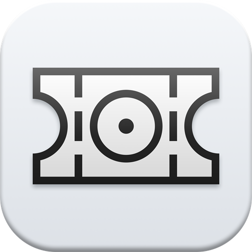
Projeto escolar · Marca · 2026OpenCourt
Gestão de quadras para escolas e clubes. O símbolo é uma quadra vista de cima, que também lê como um ingresso.
opencourtsite.vercel.appA marca no ar.
O logo no topo e o ícone dentro do produto. A interface foi gerada no Paper.
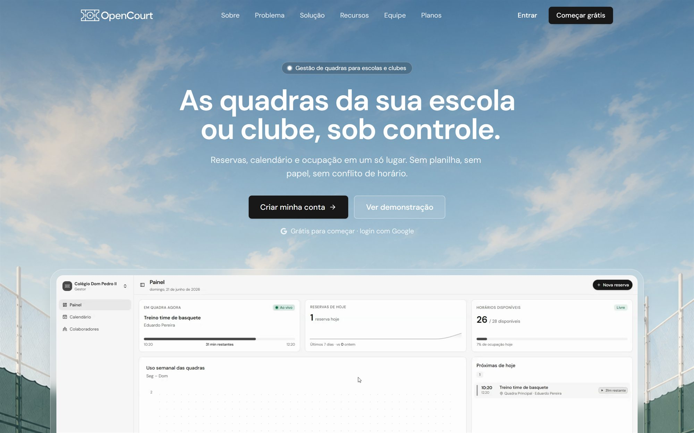
Quadra, ingresso e ícone.
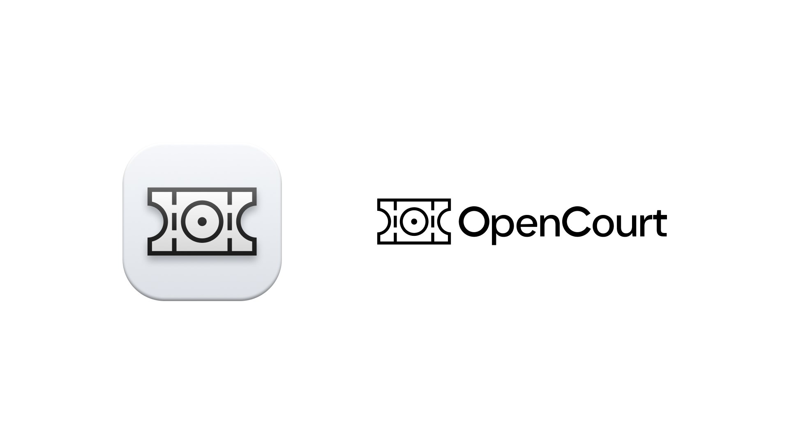
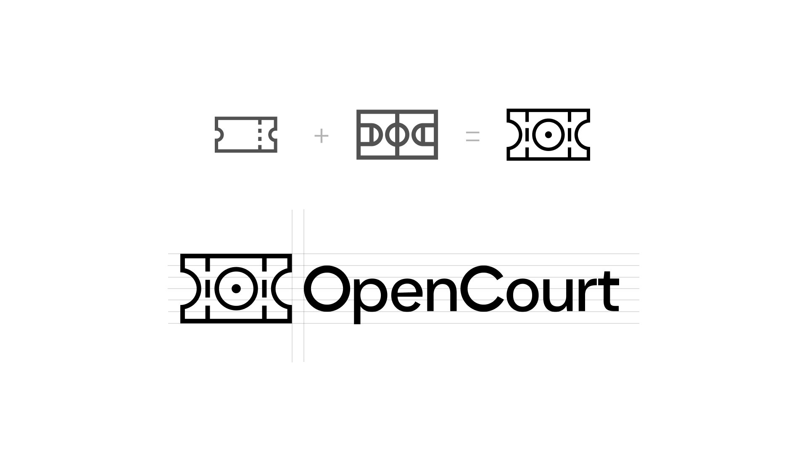
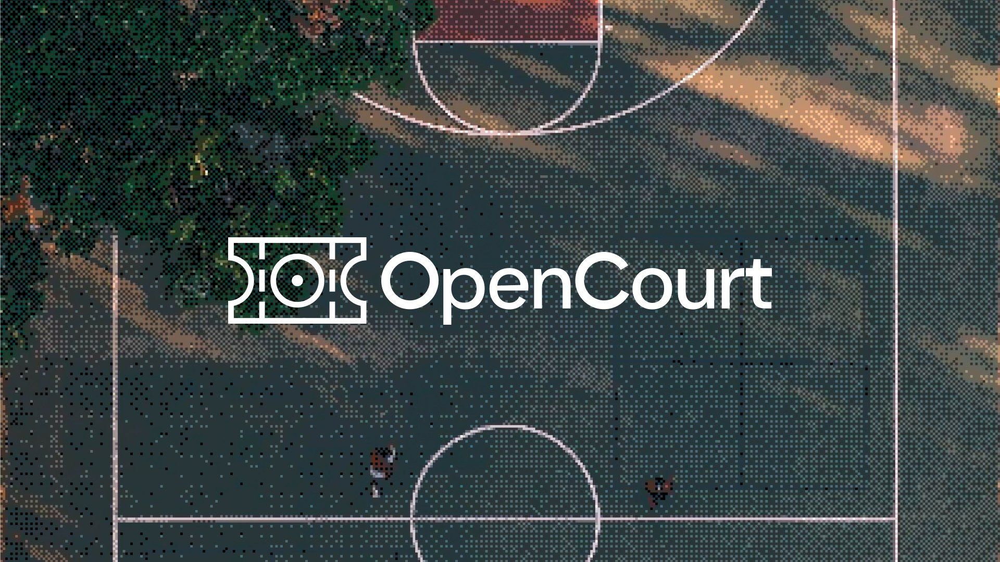
Wireframes antes da tela.
A estrutura de cada tela saiu daqui. A UI final foi gerada no Paper.
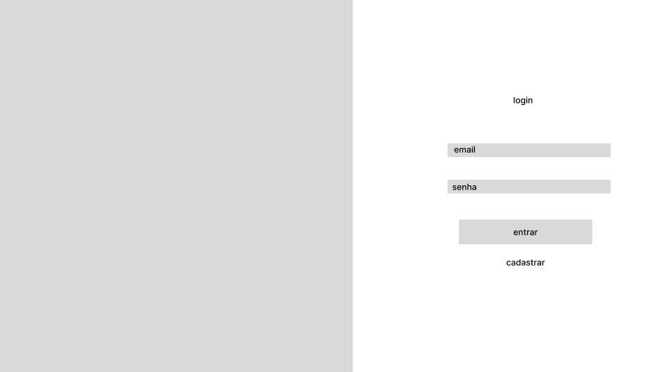
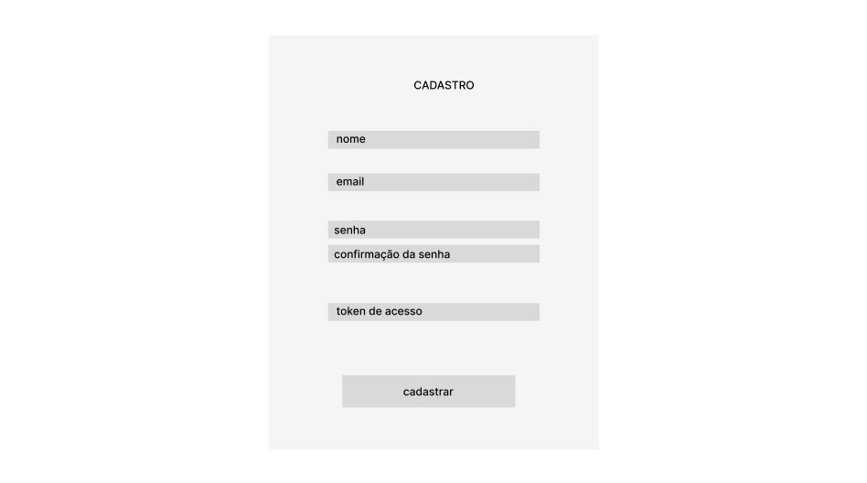
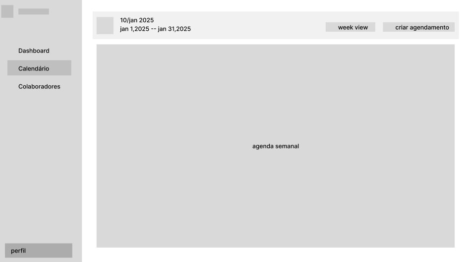
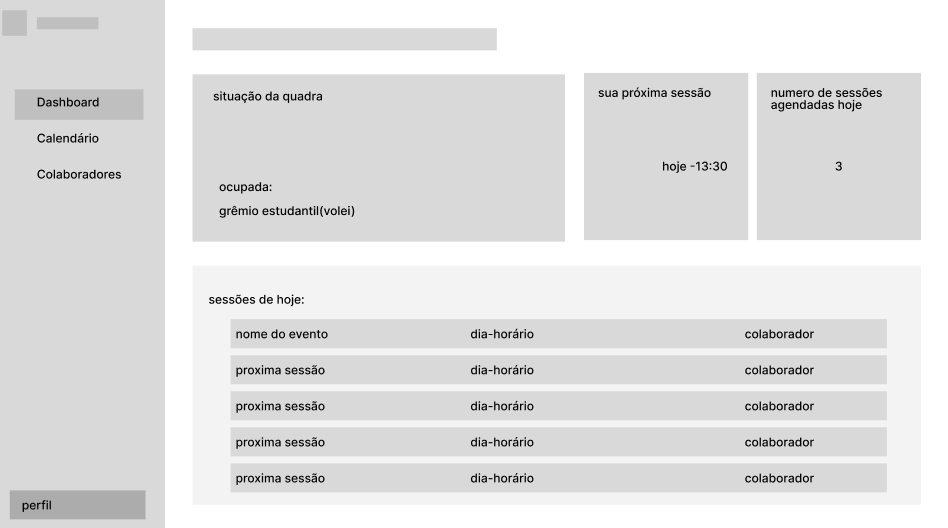
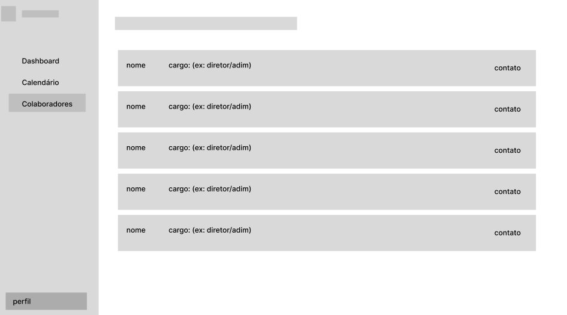
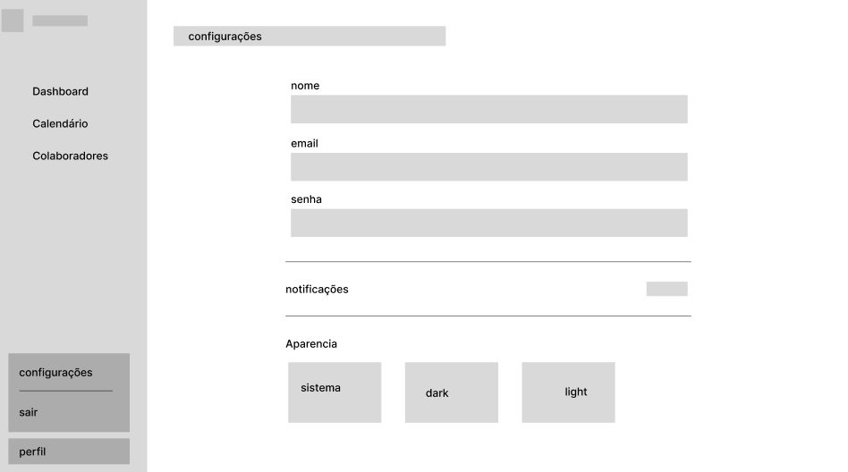
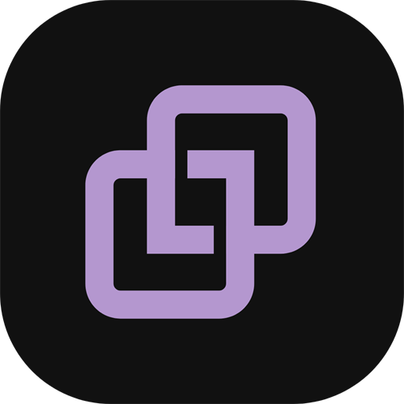
Projeto escolar · Marca e interface · 2026Elo
Gestão de chamados de TI. Dois quadrados entrelaçados: o chamado e quem resolve, ligados do registro à resolução.
elobq.vercel.appMono, roxo e pixel.
Tipografia mono, o roxo da marca e uma imagem em dithering que dá textura ao produto.
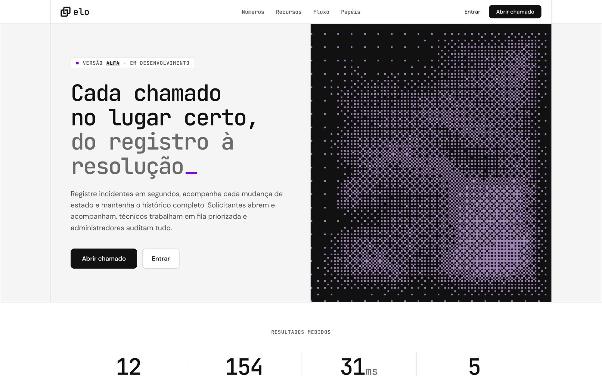
Da palavra ao símbolo.
Da palavra em serifa à paleta roxa e ao símbolo final. Interface e direção visual também são minhas.
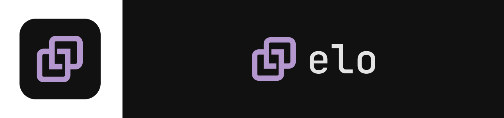
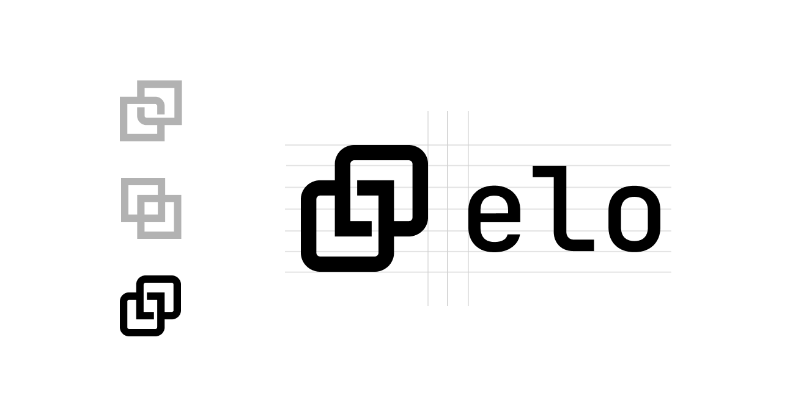
O produto em três telas.
Chamados com estado e prioridade, painel do que precisa de atenção e a visão de quem abre o chamado. Um modo de demonstração alterna entre solicitante, técnico e administrador.
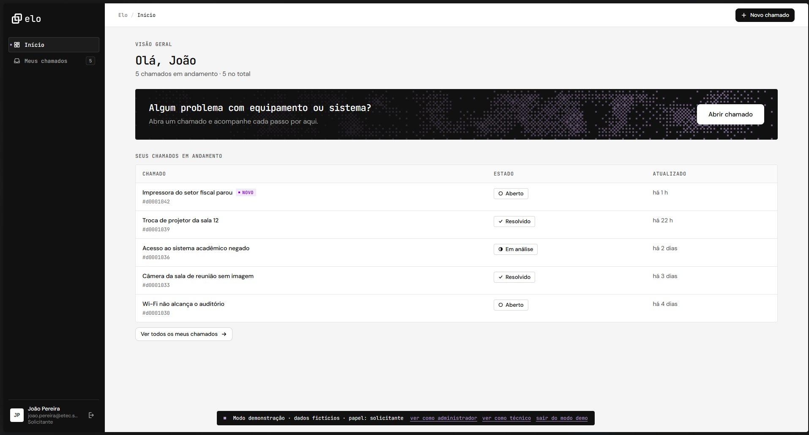
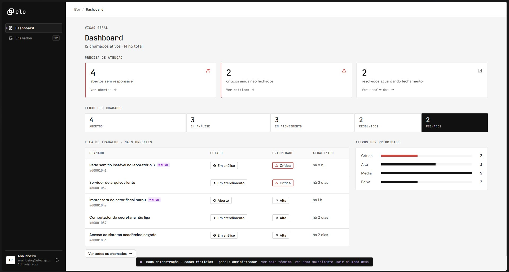
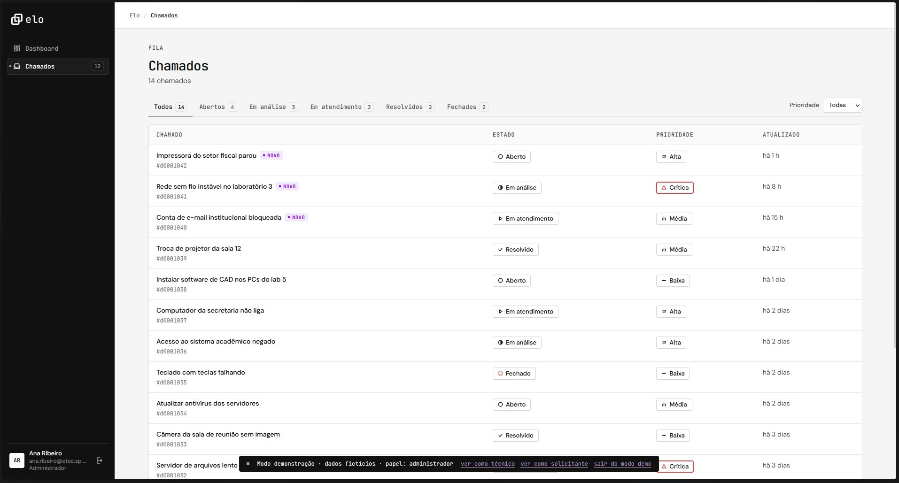